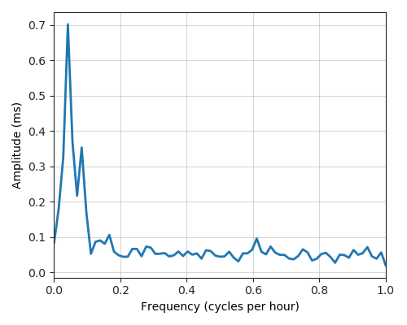
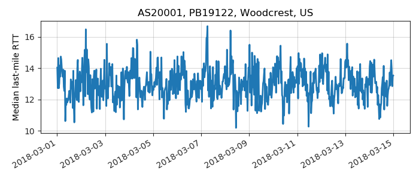

---
layout: default
title: Last-mile delay survey / 2018-03-01 / AS20001
---
AS20001, TWC-20001-PACWEST, US
Summary
- Daily last-mile fluctuations: low
- Number of probes: 25
- APNIC eyeball rank: 90
- Daily fluctuations: True
- Main frequency: 0.0417
- Average peak-to-peak amplitude: 0.70ms
Aggregated last-mile queuing delay
Periodogram

24H profile
Probes' last-mile RTT
- 